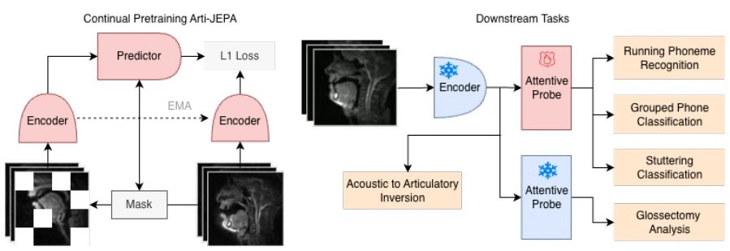
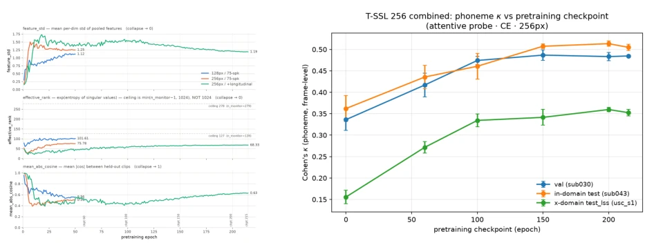
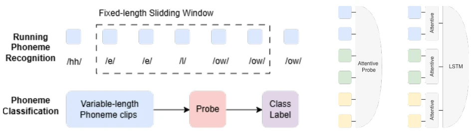
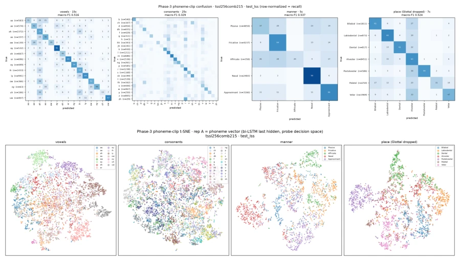
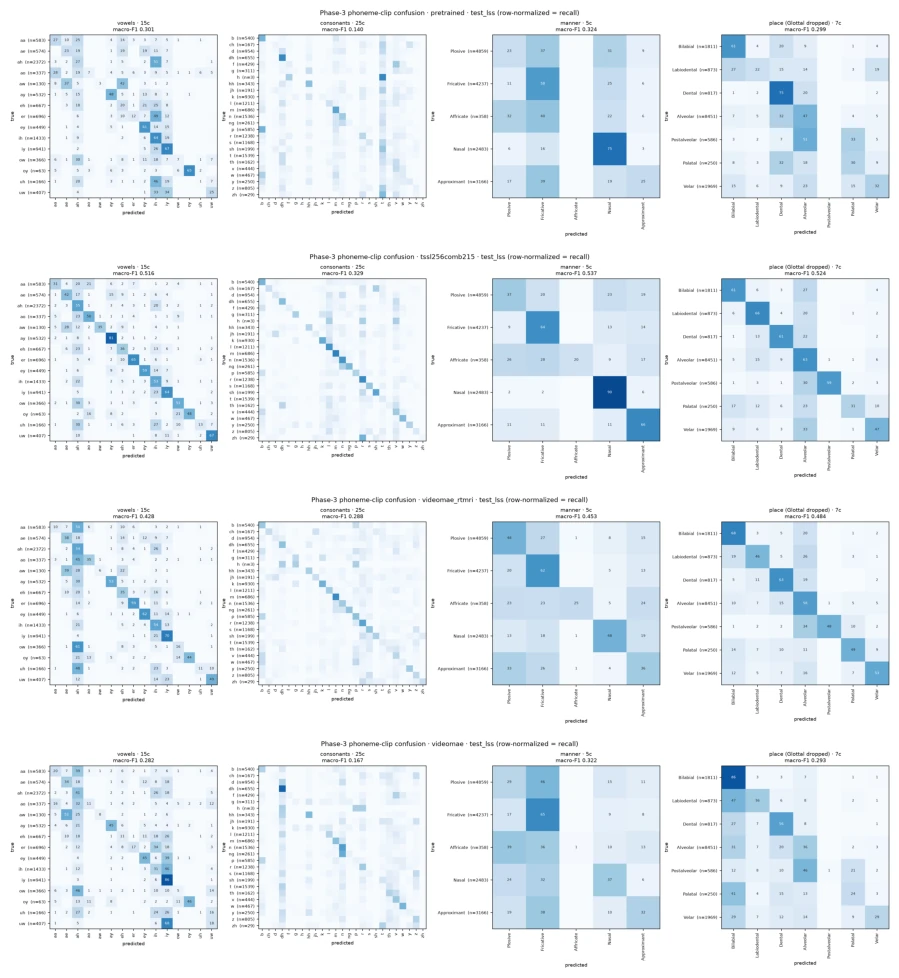
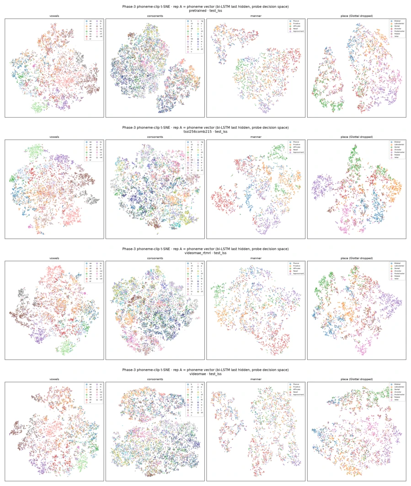
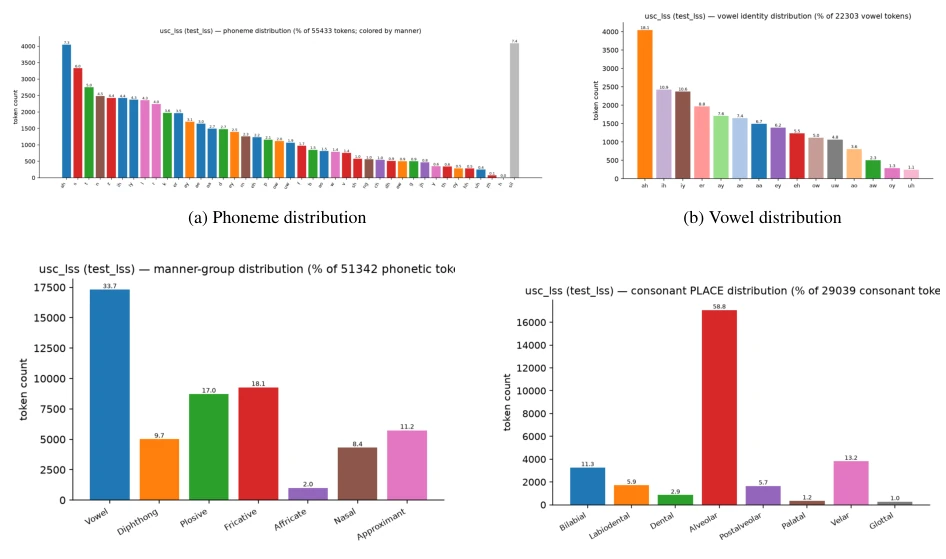
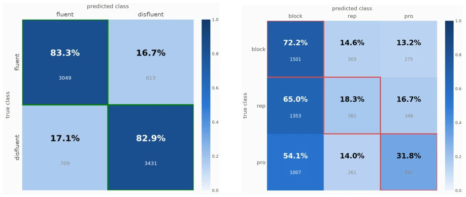

This paper attempts to force video world models onto rtMRI, amounting to "cross-modal collision". The highlight is proving that JEPA's latent prediction is more suitable for dynamic modeling of speech production than pixel reconstruction, especially in cross-domain scenarios, where the κ value doubles. But there are also many drawbacks: rtMRI data itself is scarce and low resolution, the model is merely "fine-tuned" rather than trained from scratch, and generalization capability highly depends on pre-trained weights. Although the clinical part is interesting, the sample size is too small (only 3 patients), the conclusion is somewhat optimistic, and the complete alignment before and after surgery is not resolved. Overall, it is a decent domain adaptation case, proving the potential of frozen encoders as measurement tools, but do not expect it to directly solve robotic speech interaction problems, after all, tongues and robotic arms are two different things, and the single-slice perspective loses some 3D information.
研究动机Motivation
rtMRI是研究语音产生的金标准，能捕捉整个声道动态，但机器学习面临三大难题：标注稀缺、时间分辨率要求高（毫秒级）、视觉域差异大（单切片灰度 vs 自然视频RGB）。现有视频模型如V-JEPA [4] 或 ViT [13] 多在自然视频上预训练，直接迁移到rtMRI效果差。特别是JEPA虽擅长动态预测，但存在表示坍塌风险 [4]，且特征通用性受预训练分布限制。本文旨在解决如何无标签适配JEPA到rtMRI，并验证其临床价值，如口吃和舌切除手术分析。
rtMRI is the gold standard for studying speech production, capable of capturing entire vocal tract dynamics, but machine learning faces three major challenges: scarce annotations, high temporal resolution requirements (millisecond level), and large visual domain differences (single-slice grayscale vs. natural video RGB). Existing video models such as V-JEPA [4] or ViT [13] are mostly pre-trained on natural videos, and direct transfer to rtMRI yields poor results. Especially, although JEPA is good at dynamic prediction, it carries a risk of representation collapse [4], and feature generality is limited by the pre-trained distribution. This paper aims to solve how to adapt JEPA to rtMRI without labels, and verify its clinical value, such as stuttering and tongue resection surgery analysis.
The overall process is divided into domain adaptive pre-training (T-SSL) and downstream probing. The base adopts V-JEPA 2 ViT-Large, continuing masked latent prediction targets on approximately 62 hours of unlabeled rtMRI videos. Key innovations include: 1) Time resolution adjusted to 50fps to match speech event scales, retaining a 640ms window; 2) Using EMA target encoder and stop-gradient to prevent collapse, monitoring feature standard deviation and effective rank; 3) Freezing the encoder, using only lightweight probes (such as attention mechanism + LSTM) for evaluation, avoiding overfitting. Data preprocessing unified resolution and frame rate, avoiding re-learning of absolute position encoding, adopting relative position encoding. The entire training process monitors feature statistics to ensure no representation collapse, using Cohen's kappa as the convergence criterion. In addition, targeting rtMRI single-slice characteristics, conservative data augmentation was performed, prohibiting flipping to prevent destroying speech meaning.

Figure 1: Arti-JEPA framework overview. Left: domain-adaptive pretraining on the largest available pool of vocal-tract real-time MRI, approximately 50 hours of high-frame-rate video, using a masked latent-prediction objective. Right: the resulting encoder is frozen and evaluated on a set of downstream tasks that probe how far the learned representation generalizes.

Figure 6: T-SSL pretraining convergence and collapse management
Datasets cover USC LSS [14] (phoneme recognition), GLOSS [6] (tongue resection surgery), STUT (stuttering), and USC 75SPK (pre-training). Baselines include VideoMAE, V-JEPA 2, and image encoders. Metrics are Cohen's kappa, PER, and Macro-F1. Results show: 1) Temporal video priors outperform single-frame image encoders, especially in cross-domain testing; 2) Domain adaptation doubles the κ for cross-domain phoneme prediction; 3) Latent prediction outperforms pixel reconstruction. Clinical analysis indicates post-operative speech signals can still be decoded, differences stem from anatomical structure rather than the surgery itself, and recovery differences among patients are large. Ablation experiments confirm that context length significantly improves performance, and concatenating sentence fragments can greatly reduce error rates.

Figure 2: Evaluation tasks and probing strategy: (a) Visualization of evaluation tasks: frame-level running phoneme recognition and segment-level phoneme groups classification. (b) The attentive probe (left) flattens the spatial and temporal tokens into a single sequence and attends over it jointly. The attentive LSTM (right) pools over spatial tokens first, then applies a temporal model to the resulting per-frame sequence.

Figure 3: t-SNE for the best-checkpoint Arti-JEPA on the USC LSS test set (segment-level classification task).
Figure 5: t-SNE projections of segment-level embeddings for GLOSS speakers versus USC LSS speakers on different vowels.

Figure 7: Row-normalised recall on cross-domain USC LSS, across encoders. Top: place of articulation—adapted encoders resolve Alveolar/Bilabial best, while low-support Glottal/Palatal remain near chance. Bottom: vowel identity.

Figure 8: t-SNE projections of segment-level embeddings for four encoders (rows) under four phonetic groupings (columns): vowels, consonants, manner and place. Rows: stock V-JEPA 2, Arti-JEPA, VideoMAE-rtMRI, and stock VideoMAE.

Figure 9: USC LSS Phone Distributions

Figure 10: Confusion matrices for STUTTERING dataset